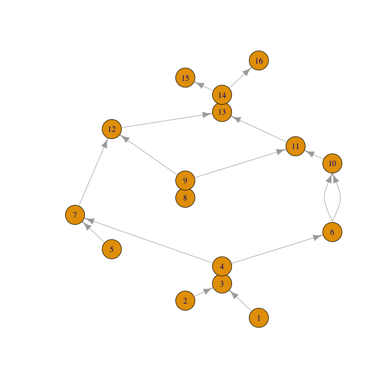

Reeb graphs arise as low-dimensional quotients of topological spaces by level set–based equivalence. The Reeb graph’s topological structure is informative of that of the original space but quicker and easier to compute.
rgph provides an S3 class and constructors for Reeb graphs, bindings to the ReebGraphPairing Java library for pairing their critical points, post-processing to extended persistent homology, and methods to accommodate igraph and network objects and to streamline the process.
Installation
You can install the development version of rgph from GitHub with:
# install.packages("pak")
pak::pak("tdaverse/rgph")We expect to submit to CRAN soon!
Example
library(rgph)
#> Loading required package: rJava
#> Loading required package: phutilThe running example from Tu, Hajij, and Rosen (2019) can be read in from an installed data file:
( ex_file <- system.file("extdata/running_example.txt", package = "rgph") )
#> [1] "/Library/Frameworks/R.framework/Versions/4.2/Resources/library/rgph/extdata/running_example.txt"
( ex_reeb <- read_reeb_graph(ex_file) )
#> Reeb graph with 16 vertices and 18 edges on [0,15]:
#> 1 ( 0) -- 3 ( 2)
#> 2 ( 1) -- 3 ( 2)
#> 3 ( 2) -- 4 ( 3)
#> 4 ( 3) -- 6 ( 5)
#> 4 ( 3) -- 7 ( 6)
#> 5 ( 4) -- 7 ( 6)
#> 6 ( 5) -- 10 ( 9)
#> 6 ( 5) -- 10 ( 9)
#> 7 ( 6) -- 12 (11)
#> 8 ( 7) -- 9 ( 8)
#> 9 ( 8) -- 12 (11)
#> 9 ( 8) -- 11 (10)
#> ...The Reeb graph printout comprises the edgelist. In this example, the function value at each vertex is (up to numbering convention) the index of that vertex. The R indexing starts at 1, while the function values, printed in parentheses, reflect the original indexing from 0.
While no plot() method is provided yet, a layered layout from igraph may be helpful. Here we negate the values of the Reeb function so that vertices with higher (original) values are positioned higher in the plot:
ex_igraph <- as_igraph(ex_reeb, values = "depth")
ex_layout <- igraph::layout_with_sugiyama(
ex_igraph,
layers = -igraph::vertex_attr(ex_igraph, "depth")
)
plot(ex_igraph, layout = ex_layout)
While low-dimensional, Reeb graphs are intricate structures, whereas most statistical applications require numerical summary statistics. A meaningful topological signature of a Reeb graph (hence of its parent space) can be obtained by pairing its critical points.
Tu, Hajij, and Rosen proposed a clever single-pass algorithm, “propagate-and-pair”, which outperformed a multiple-pass algorithm (based on standard procedures at the time) on most Reeb graphs included in a comparison. Both methods are provided, which the user may control using the method argument:
( ex_pairs <- reeb_graph_pairs(ex_reeb, method = "single") )
#> Reeb graph critical pairing (8 pairs):
#> 1 ( 0) •- ... -• 16 (15)
#> 2 ( 1) •- ... >- 3 ( 2)
#> 5 ( 4) •- ... >- 7 ( 6)
#> 8 ( 7) •- ... >- 11 (10)
#> 6 ( 5) -< ... >- 10 ( 9)
#> 4 ( 3) -< ... >- 12 (11)
#> 9 ( 8) -< ... >- 13 (12)
#> 14 (13) -< ... -• 15 (14)Each end of a pairing is either a local extremum (minimum or maximum) or a fork (upward or downward). These types are indicated in the printout by bullets and inequality signs, respectively; refer to the plot above to see how the pairings exhaust the vertex–edge incidences.
The pairing output can be converted to extended persistence diagrams using the persistence class from phutil and plotted using the diagram method from TDA:
( ex_ph <- reeb_graph_persistence(ex_pairs, scale = "index") )
#>
#> ── Persistence Data ────────────────────────────────────────────────────────────
#> ℹ There are 4 and 4 pairs in dimensions 0 and 1 respectively.
#> ℹ Computed from a Extended Reeb (Sublevel) filtration using `rgph::reeb_graph_persistence()`.
#> ℹ With the following parameters: method = 'single_pass' and scale = 'index'.
TDA::plot.diagram(as.data.frame(ex_ph), asp = 1)
The plot overlays 4 sub-diagrams, two of which lie below the diagonal because they encode features in extended persistence whose births occur at larger function values than their deaths (explained in detail by Carrière & Oudot (2018); compare to Fig. 1 of Tu, Hajij, and Rosen):
- min–max pairs that encode connected components, constitutive of degree-\(0\) positive extended persistence; the pair \((1,16)\)
- min–down pairs that encode merges, in degree-\(0\) ordinary persistence; e.g. the pair \((5,7)\)
- up–max pairs that encode splits, in degree-\(1\) relative persistence; the pair \((15,14)\)
- up–down pairs that encode cycles, in degree-\(1\) negative extended persistence; e.g. the pair \((13,9)\)